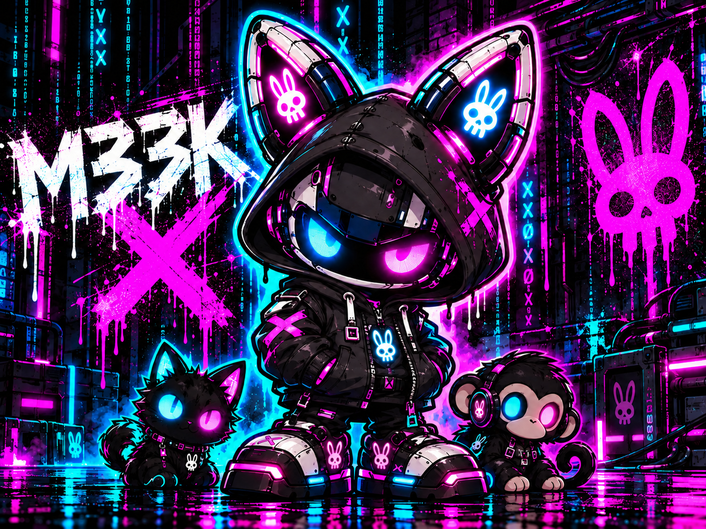

ESP32-S3
M33K X Watch
LilyGO T-Watch Ultra
NEW — 0.6.0i Public Beta
Wardrive extended Wi-Fi totals, improved scrolling, and target-detail stability.
Connect the Watch with a USB data cable, then start the installer.
M33K X
Install M33K X firmware directly from a supported desktop browser.

Flash the Watch and C5 separately, then power both devices near each other for first-time pairing.
LilyGO T-Watch Ultra
NEW — 0.6.0i Public Beta
Wardrive extended Wi-Fi totals, improved scrolling, and target-detail stability.
Connect the Watch with a USB data cable, then start the installer.
Seeed XIAO ESP32-C5 companion
Connect the C5 with a USB data cable, then start the installer.
Flash one device at a time so the correct serial port is easy to identify. For an update, choose not to erase the device when prompted so saved Wi-Fi settings and the Watch↔C5 enrollment key are preserved.
M33K X is a hands-on learning and development project. Firmware is still being tested on real hardware, and features may change as development continues.